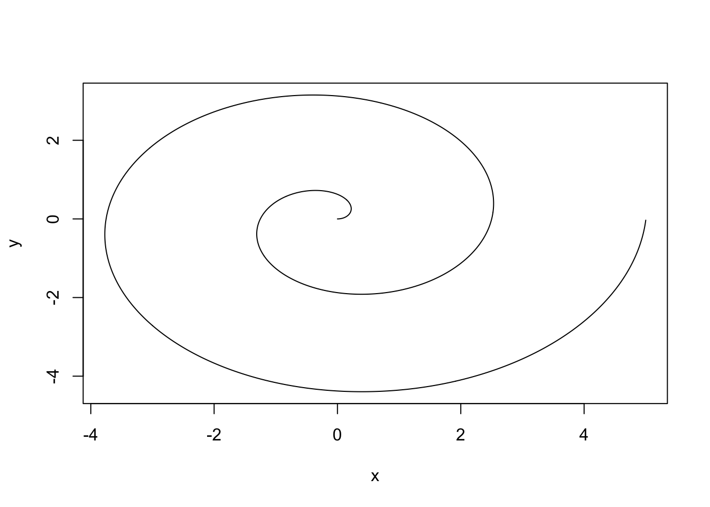

1 Introduction
Reading: 25 minute(s) at 200 WPM.
Videos: 47 minutes
Objectives
- Set up necessary software for this class on personal machines.
- Detect and resolve problems related to file systems, working directories, and system paths when troubleshooting software installation.
- Create R Markdown or Quarto documents with good reproducible principles.
1.1 Getting Started
Setting up your computer
In this section, I will provide you with links to set up various programs on your own machine. If you have trouble with these instructions or encounter an error, post on the class message board or contact me for help.
If you already have R downloaded, please follow these steps anyways, to make sure you have the most recent version of R. Do not ignore these instructions. If you neglect to update your version of R, you may find that updating a package will make it so your code will not run.
Installing R, RStudio, and Quarto
-
Download and run the R installer for your operating system from CRAN:
- Windows: https://cran.rstudio.com/bin/windows/base/
- Mac: https://cran.rstudio.com/bin/macosx/ (double check your macOS version)
- Linux: https://cran.rstudio.com/bin/linux/ (pick your distribution)
(Required) If you are on Windows, you should also install the Rtools4 package; this will ensure you get fewer warnings later when installing packages. Make sure you double check the version compatability.
More detailed instructions for Windows are available here
Download and install the latest version of RStudio for your operating system (see Step 2 Installers). RStudio is a integrated development environment (IDE) for
R- it contains a set of tools designed to make writingRcode easier.Download and install the latest version of Quarto for your operating system. Quarto is a command-line tool released by RStudio that allows Rstudio to work with python and other R specific tools in a unified way. We will talk more about Quarto in a later section, but for now just know this is the “notebook” you will be completing and writing all your assignments in.
If you would like a video tutorial on downloading RStudio, here is one:
RStudio organization has recently re-branded to posit. Rstudio is still the name of the IDE, but these two names may be used interchangeably. See a video of Hadley Wickham talking about the re-branding.
Introduction to R and RStudio
In this section, we will learn about some of the tools you just installed. You may have worked with R and RStudio in previous classes, but never had a course dedicated to learning about their functionality.
Introduction to R
R is a statistical programming language. Unlike more general-purpose languages, R is optimized for working with data and doing statistics. R was created by Ross Ihaka and Robert Gentleman in 1993 (hence “R”) and was formally released by the R Core Group in 1997 (a group of 20ish volunteers who are the only people who can change the base - built in- functionality of R). If you want to build an independent, standalone graphical interface, or run a web server, R is probably not the ideal language to use (you might want C/python or PHP/python, respectively). If you want to vacuum up a bunch of data, fit several regression models, and then compare the models, R is a great option and will be faster than working in a more general-purpose language like C or base python.
R is
- vector-based
- 1 indexed (start counting 1, 2, 3, …)
- a scripting language (R code does not have to be compiled before it is run)
One thing to know about R is that it is open-source. This means that no company owns R (like there is for SAS or Matlab) and that developers cannot charge for the use of their R software. This does not mean that all of your code needs to be public (you can keep your code private), but it is important to be a good open-source citizen by sharing your code publicly when possible (later we will learn about GitHub), contributing to public projects and packages, creating your own packages, and using R for ethical and respectful projects.
Note that RStudio is NOT R, but a platform to help you use R through and that it is a way to make money around the culture of R.
The History of R
RStudio: the IDE
An IDE is an integrated development environment - a fancy, souped up text editor that is built to make programming easier. Back in the dark ages, people wrote programs in text editors and then used the command line to compile those programs and run them.
RStudio provides a cheat-sheet for the IDE if you are so inclined.
RStudio is not R - it’s just a layer on top of R. So if you have a question about the user interface, you have an RStudio question. If you have a question about the code, you have an R question.
Navigating RStudio

In the top-left pane is the text editor. This is where you’ll do most of your work.
In the top right, you’ll find the environment, history, and connections tabs. The environment tab shows you the objects available in R (variables, data files, etc.), the history tab shows you what code you’ve run recently, and the connections tab is useful for setting up database connections.
On the bottom left is the console. There are also other tabs to give you a terminal (command line) prompt, and a jobs tab to monitor progress of long-running jobs. In this class we’ll primarily use the console tab.
-
On the bottom right, there are a set of tabs:
- files (to give you an idea of where you are working, and what files are present),
- plots (which will be self-explanatory),
- packages (which extensions to R are installed and loaded),
- the help window (where documentation will show up), and
- the viewer window, which is used for interactive graphics or previewing HTML documents.
Installing Packages
One of R’s strengths is the package repository, CRAN (Comprehensive R Archive Network), that allows anyone (yes, even you!) to write an R package. Packages contain “extra” functionality (outside the base functionality of R). This means that R generally has the latest statistical methods available, and one of the best ways to ensure someone uses your work is to write an R package to make that work accessible to the general population of statisticians/biologists/geneticists.
To install the tibble package in R, we would use the following code:
install.packages("tibble")Then, to use the functions within that package, we need to load the package:
When you load a package, all of the functions in that package are added to your R Namespace (this is a technical term) - basically the list of all of the things R knows about. This may be problematic if you have two packages with the same function name.
You only need to install a package once and your computer will be able to find the package on your computer when it needs to. However, you need to load the package every time R is restarted or you switch to a new project.
If you want to use a function from a package without loading the package into your namespace, you can do that by using pkgname::function syntax.
For instance, this code creates a sample data frame using the tribble function in the tibble package.
tibble::tribble(~col1, ~col2, 1, 'a', 2, 'b', 3, 'c')# A tibble: 3 × 2
col1 col2
<dbl> <chr>
1 1 a
2 2 b
3 3 c Test your setup
We will find our way in R and learn more about Quarto in the following sections, but for now open RStudio on your computer and explore a bit.
Can you find the
Rconsole? Type in2+2to make sure the result is4.Run the following code in the R console:
install.packages(
c("tidyverse", "rmarkdown", "knitr", "quarto")
)-
Can you find the text editor?
Create a new quarto document (
File > New File > Quarto Document).Compile the document using the
Renderbutton and use the Viewer pane to see the result.If this all worked, you have RStudio, Quarto, and
Rset up correctly on your machine.
Additional Resources: Basics of R and RStudio
Basics of R Programming
RStudio Primer, Basics of Programming in R
Introduction to RStudio
1.2 Directories, Paths, and Projects
In the pre-reading section, File Systems, we learned how to organize our personal files and locate them using absolute and relative file paths. The idea of a “base folder” or starting place was introduced as a working directory. In R, there are two ways to set up your file path and file system organization:
- Set your working directory in
R(do not reccommend) - Use RProjects (preferred!)
Working Directories in R
To find where your working directory is in R, you can either look at the top of your console or type getwd() into your console.

getwd()[1] "C:/Users/erobin17/OneDrive - Cal Poly/stat331-calpoly-text"Although it is not recommended, you can set your working directory in R with setwd().
setwd("/path/to/my/assignment/folder")Rprojects
Since there are often many files necessary for a project (e.g. data sources, images, etc.), R has a nice built in system for setting up your project organization with RProjects.
To create an Rproject, first open RStudio on your computer and click File > New Project, then:


If you plan to use the Studio computers during class, I recommend having a way to access and save your material between the Studio computers and your personal computer (e.g. put your class directory and Rproject on OneDrive). The idea with Rprojects is then your relative file paths will work in either computer without any changes!
This new folder, stat331-test-student should now live in your OneDrive folder (or whatever sub-directory you save it to). This is your new “home” base for this class - whenever you refer to a file with a relative path it will look for it here.
File Paths in R
A quick warning on file paths is that Mac/Linux and Windows differ in the direction of their backslash to separate folder locations. Mac/Linux use / (e.g. practice-activities/PA1.pdf) while Window’s uses \ (e.g. practice-activities\PA1.pdf).
R can work with both, however, a backslash \ means something different to R so if you copy a file path from your file filder in Windows, you will need to replace all backslashes with a double backslash \\ (e.g. practice-activities\\PA1.pdf)
Workflow
1.3 Scripts and Notebooks
In this class, we’ll be using markdown notebooks to keep our code and notes in the same place. One of the advantages of both R is that it is a scripting language, but it can be used within notebooks as well. This means that you can have an R script file, and you can run that file, but you can also create a document (like the one you’re reading now) that has code AND text together in one place. This is called literate programming and it is a very useful workflow both when you are learning programming and when you are working as an analyst and presenting results.
Scripts
Before I show you how to use literate programming, let’s look at what it replaces: scripts. Scripts are files of code that are meant to be run on their own. They may produce results, or format data and save it somewhere, or scrape data from the web – scripts can do just about anything.
Scripts can even have documentation within the file, using # characters (at least, in R) at the beginning of a line. # indicates a comment – that is, that the line does not contain code and should be ignored by the computer when the program is run. Comments are incredibly useful to help humans to understand what the code does and why it does it.
Plotting a logarithmic spiral
This code will use concepts we have not yet introduced - feel free to tinker with it if you want, but know that you’re not responsible for being able to write this code yet. You just need to read it and get a sense for what it does. I have heavily commented it to help with this process.
# Define the angle of the spiral (polar coords)
# go around two full times (2*pi = one revolution)
theta <- seq(0, 4*pi, .01)
# Define the distance from the origin of the spiral
# Needs to have the same length as theta
r <- seq(0, 5, length.out = length(theta))
# Now define x and y in cartesian coordinates
x <- r * cos(theta)
y <- r * sin(theta)
plot(x, y, type = "l")
To create your first script, click File > New File > R Script and copy paste the code from above. You can save this script on your computer just as you would any other file such as a word document, pdf, or image.
Scripts can be run in Rstudio by clicking the Run button  at the top of the editor window when the script is open.
at the top of the editor window when the script is open.
Most of the time, you will run scripts interactively - that is, you’ll be sitting there watching the script run and seeing what the results are as you are modifying the script. However, one advantage to scripts over notebooks is that it is easy to write a script and schedule it to run without supervision to complete tasks which may be repetitive.
Notebooks
Notebooks are an implementation of literate programming. R has native notebooks that allow you to code in R. This book is written using Quarto markdown, which is an extension of Rmarkdown.
In this class, we’re going to use Quarto/R markdown. This matters because the goal is that you learn something useful for your own coding and then you can easily apply it when you go to work as an analyst somewhere to produce impressive documents.
To create a quarto document click File > New File > Quarto Document. This will open a notebook template using quarto. You can then Render the document to a pdf or html file.
Introduction to Quarto
(Required) Read through the following resources to introduce Quarto:
While in this class we will be using Quarto, before Quarto there was RMarkdown (and it is still widely used). If you wish, you can read about Rmarkdown here.
Download and save the Markdown syntax Cheat Sheet.
Learn more about Notebooks and Quarto
There are some excellent opinions surrounding the use of notebooks in data analysis:
- Why I Don’t Like Notebooks” by Joel Grus at JupyterCon 2018
-
The First Notebook War by Yihui Xie (response to Joel’s talk).
Yihui Xie is the person responsible forknitrandRmarkdown.
You can learn more about the functionality of Quarto at the following links:
You can find the entire list of options you can use to format your HTML file with Quarto here. Poke around the gallery of cool HTML documents rendered with Quarto:
1.4 Getting help
In R, you can access help with a ?. Suppose we want to get help on a for loop. In the R console, we can run this line of code to get help on for loops.
?`for`starting httpd help server ... doneBecause for is a reserved word in R, we have to use backticks (the key above the TAB key) to surround the word for so that R knows we’re talking about the function itself. Most other function help can be accessed using ?function_name.
(You will have to run this in interactive mode for it to work)
w3schools has an excellent R help on basic functions that may be useful as well - usually, these pages will have examples.
Google is your friend.
The R community has an enormous aresenal of online learning resources. I will linked a few throughout the “read more” sections in this text, but you can always find more!

Learn to:
- Google for tutorials and examples
- Use Stack Overflow
- Ask questions on Twitter
- Make good use of the vast and welcoming R network on the internet
A useful video by Dr. Theobold on “Troubleshooting in R”.